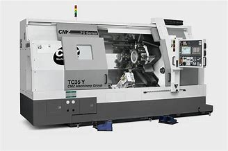
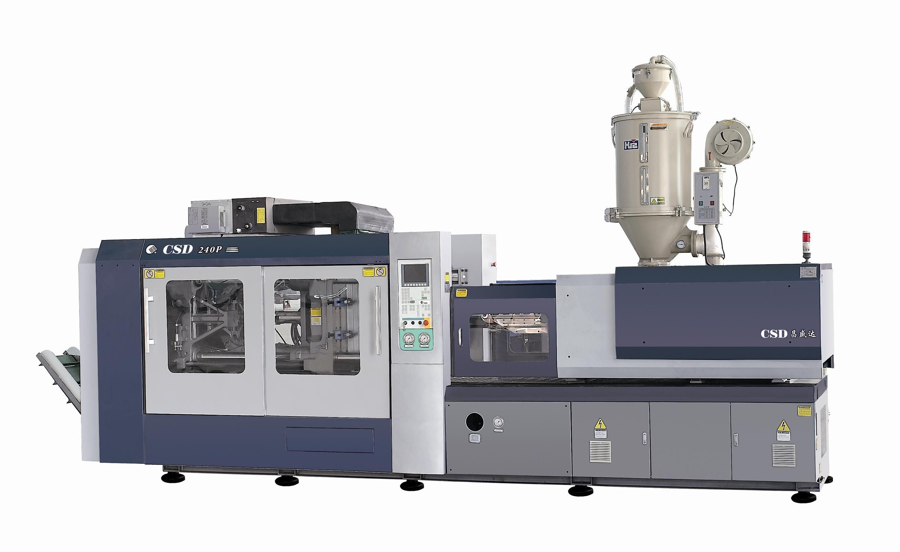
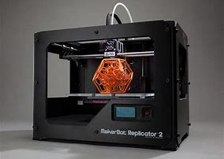

Imagine that you the superpower to create objects from ideas in your mind in a few hours or minutes. Well you're in luck! 3D printing has the ability to create object with better efficiency and cost than injection molding and computer numerical control (CNC). Injection molding requires a mold which can take up to days and cost thousands of dollars. CNC machines can cost thousands of dollars. They uses a drill to take out material with makes the machine very wasteful and inefficient with material. However, 3D printers can cost in the low hundreds and are very efficient with material usage because they use only what they need. Printing an objects can range from several hours to a couple minutes which is fast compared to the weeks of manufacturing time of an injection mold of a injection mold.
| Machine | Advantages | Disadvantages | |
|---|---|---|---|
|
CNC  |
Precise, variety of materials | Precise, inefficient material usage | |
|
Injection Molding  |
Efficient at a large scale, high resolution | Expensive | |
|
3D printing  |
Precise, cheap, efficient | Small variety of material it can process |
There are multiple kinds of 3D printing, learn about them in this website or click the link below
More info on 3D printing